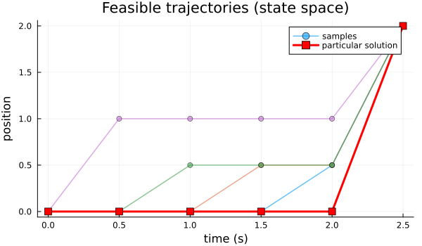
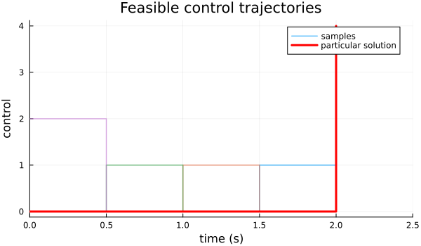
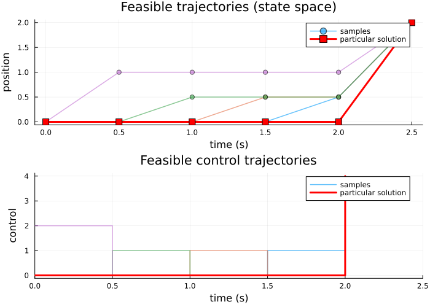
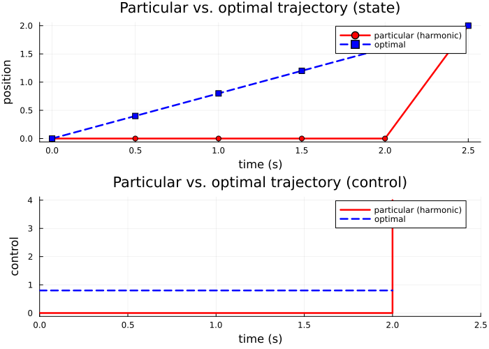
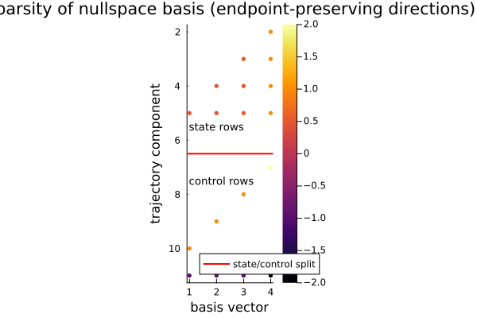
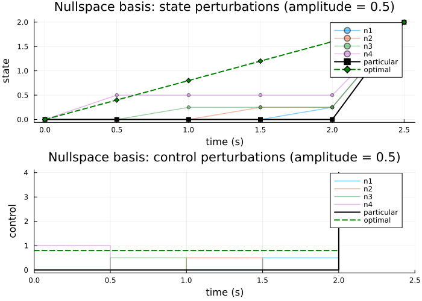

Controlled Trajectory Examples: 0 — Scalar Integrator
This is a simplified prerequisite example that establishes the basic workflow with a scalar integrator system—the simplest possible LQR problem with exact closed-form solutions.
Why start here?
The scalar integrator has no drift dynamics and admits exact analytical solutions to both the feasibility and optimization problems. This makes it ideal for:
- Understanding the affine structure of feasible trajectories.
- Visualizing the nullspace basis (here, just lines in 2D).
- Checking that the sheaf machinery produces expected results.
- Verifying plotting and analysis routines before scaling to larger systems.
Physical system
A single point whose position is directly commanded by a scalar control input:
\[x_t \in \mathbb{R}, \quad u_t \in \mathbb{R}, \quad x_{t+1} = x_t + h \cdot u_t.\]
The state dimension is n = 1; the control dimension is m = 1.
Reference:
- Anderson, B. D. O. & Moore, J. B. (1990). Optimal Control: Linear Quadratic Methods.
using CellularSheaves
using LinearAlgebra
using BlockArrays
using Plots
using SparseArrays
using CellularSheaves.TrajectorySheaves
using CellularSheaves.TrajectorySheaves: nullspace_trajectory_familySetup: discrete time parameters
n = 1 # state dimension (scalar position)
m = 1 # control dimension (scalar control)
h = 0.5 # sample period (seconds)
k = 5 # number of discrete time steps
setup_summary = (; n, m, h, k)
setup_summary(n = 1, m = 1, h = 0.5, k = 5)Define the continuous and discrete models
For the pure integrator, the continuous-time system is simply:
\[\dot{x} = u.\]
With zero-order hold discretization, this becomes:
\[x_{t+1} = x_t + h \cdot u_t.\]
Ac = reshape([0.0], 1, 1) # continuous: ẋ = 0·x + u
Bc = reshape([1.0], 1, 1) # continuous: ẋ = u1×1 Matrix{Float64}:
1.0Build the trajectory sheaf. The base sheaf is a single vertex with 1D stalk.
F = EuclideanSheaf{Float64}(fill(n, 1))
ts = ControlledTrajectorySheaf(F, Ac, Bc, h, k)
dynamics_summary = (; Ad=ts.Ad, Bd=ts.Bd)
dynamics_summary(Ad = [1.0;;], Bd = [0.5;;])Define boundary conditions
We want to steer from initial position x₁ to final position xₖ₊₁.
x1 = [0.0] # start at position 0
xk1 = [2.0] # reach position 2
boundary_summary = (; x1=x1[1], xk1=xk1[1])
boundary_summary(x1 = 0.0, xk1 = 2.0)Feasible trajectories: the affine subspace
The feasible trajectory space is affine: all trajectories satisfying the boundary conditions and dynamics form an affine subspace of dimension r = (k+1) - 2 = k - 1 (since we have k+1 time steps and 2 boundary constraints).
feasible_control_trajectory_basis returns:
z_p— the particular solution (harmonic extension of boundary data)N— columns spanning the nullspace (endpoint-preserving perturbations)
z_p_raw, N = feasible_control_trajectory_basis(ts, x1, xk1)([0.0, 0.0, 0.0, 0.0, 0.0, 2.0, 0.0, 0.0, 0.0, 0.0, 4.0], [0.0 0.0 0.0 0.0; 0.0 0.0 0.0 1.0; … ; 1.0 0.0 0.0 0.0; -1.0 -1.0 -1.0 -2.0])Convert to BlockArray for easier component access.
z_p_block = BlockArray(z_p_raw, vcat([n for _ in 1:k+1], [m for _ in 1:k]))
r = size(N, 2)
p_total = (k + 1) * n + k * m
trajectory_summary = (; p_total, state_entries=(k + 1) * n, control_entries=k * m, r)
trajectory_summary
if r <=0
error("No free parameters in the trajectory space.\n The particular solution is the unique feasible trajectory.\n This problem is designed to have nontrivial kernel so this is a problem.")
endVerify the particular solution
Check that z_p satisfies the boundary conditions and dynamics.
x_p = [Array(z_p_block[Block(t)])[1] for t in 1:k+1]
u_p = [Array(z_p_block[Block(k+1+t)])[1] for t in 1:k]5-element Vector{Float64}:
0.0
0.0
0.0
0.0
4.0Check dynamics: xp[t+1] ≈ xp[t] + h * u_p[t]
dyn_errs = [x_p[t+1] - (x_p[t] + ts.Bd[1,1] * u_p[t]) for t in 1:k]
particular_solution_check = (
x1_match=x_p[1] ≈ x1[1],
xk1_match=x_p[end] ≈ xk1[1],
max_dynamics_error=maximum(abs, dyn_errs),
)
particular_solution_check(x1_match = true, xk1_match = true, max_dynamics_error = 0.0)PART 1: Visualize the feasible trajectory space
Since we have r = k-1 free parameters, we can sample the affine subspace and visualize several feasible trajectories. Each is of the form
\[z(\alpha) = z_p + N\alpha, \quad \alpha \in \mathbb{R}^r.\]
times_state = h .* (0:k)
times_control = h .* (0:k-1)0.0:0.5:2.0Sample the nullspace using standard basis vectors. Each α is a standard basis vector (one component = 1, others = 0). This shows the effect of each nullspace column in isolation.
α_samples = [Vector{Float64}(I(r)[:, j]) for j in 1:r]
feasible_trajectories = []
for α in α_samples
z = Array(z_p_block) + N * α
zb = BlockArray(z, vcat([n for _ in 1:k+1], [m for _ in 1:k]))
push!(feasible_trajectories, zb)
endPlot the state trajectories (feasible set).
p_feasible_state = plot(
xlabel="time (s)", ylabel="position",
title="Feasible trajectories (state space)",
legend=:topright, size=(600, 350))
for (i, zf) in enumerate(feasible_trajectories)
positions = [Array(zf[Block(t)])[1] for t in 1:k+1]
if r == 0
plot!(p_feasible_state, times_state, positions;
lw=2, color=:blue, marker=:circle, label="")
else
plot!(p_feasible_state, times_state, positions;
lw=1.5, alpha=0.6, marker=:circle, markersize=4,
label=i==1 ? "samples" : "")
end
endHighlight the particular solution.
plot!(p_feasible_state, times_state, x_p;
lw=3, color=:red, marker=:square, markersize=5,
label="particular solution")
p_feasible_state
Plot the corresponding control trajectories as step functions (zero-order hold).
p_feasible_ctrl = plot(
xlabel="time (s)", ylabel="control",
title="Feasible control trajectories",
legend=:topright, size=(600, 350),
xlim=(0, h*k))
for (i, zf) in enumerate(feasible_trajectories)
controls = [Array(zf[Block(k+1+t)])[1] for t in 1:k]
if r == 0
plot!(p_feasible_ctrl, times_control, controls;
lw=2, color=:blue, seriestype=:steppost, label="")
else
plot!(p_feasible_ctrl, times_control, controls;
lw=1.5, alpha=0.6, seriestype=:steppost,
label=i==1 ? "samples" : "")
end
end
plot!(p_feasible_ctrl, times_control, u_p;
lw=3, color=:red, seriestype=:steppost,
label="particular solution")
p_feasible_ctrl
Combine feasible-space plots.
feasible_plot = plot(p_feasible_state, p_feasible_ctrl;
layout=(2, 1), size=(700, 500))
feasible_plot
PART 2: LQR objective and optimization
To recover the straight-line state trajectory, we use a pure minimum-control- effort objective. The running state penalty Q is set to zero; otherwise it biases the optimizer toward smaller intermediate states and bends the path away from the linear interpolation between endpoints.
We therefore minimize the quadratic cost
\[J(z) = \tfrac{1}{2} \sum_{t=1}^{k} \bigl( Q x_t^2 + R_u u_t^2 \bigr) + \tfrac{1}{2} Q_f x_{k+1}^2.\]
Since x_{k+1} is already fixed as a hard boundary condition, the terminal term involving Q_f is constant over the feasible set and does not affect the optimizer. The active part of the objective is therefore just \tfrac{1}{2} \sum_{t=1}^{k} R_u u_t^2.
Q = 0.0 # no running state penalty: recover the minimum-energy straight line
Ru = 1.0 # weight on control effort
Qf = 10.0 # terminal penalty is constant here because x_{k+1} is fixed
lqr_weights = (; Q, Ru, Qf)
lqr_weights(Q = 0.0, Ru = 1.0, Qf = 10.0)Assemble the cost Hessian. For a scalar system, this is straightforward.
H, f, _ = lqr_objective(ts, reshape([Q], 1, 1), reshape([Ru], 1, 1); Qf=reshape([Qf], 1, 1))
objective_shapes = (; H_size=size(H), f_size=size(f))
objective_shapes(H_size = (11, 11), f_size = (11,))Solve the reduced quadratic program
optimal_control_trajectory solves:
\[\min_{\alpha} \tfrac{1}{2} \alpha^\top (N^\top H N) \alpha + \alpha^\top N^\top (H z_p + f).\]
z_opt, α_opt, z_p_returned, null_basis = optimal_control_trajectory(ts, x1, xk1, H, f)
z_opt_block = BlockArray(z_opt, vcat([n for _ in 1:k+1], [m for _ in 1:k]))
x_opt = [Array(z_opt_block[Block(t)])[1] for t in 1:k+1]
u_opt = [Array(z_opt_block[Block(k+1+t)])[1] for t in 1:k]5-element Vector{Float64}:
0.7999999999999998
0.8000000000000003
0.7999999999999998
0.8
0.7999999999999998Compute the optimal cost.
J_opt = 0.5 * Array(z_opt)' * H * Array(z_opt) + Array(z_opt)' * f21.6Compare to the particular solution cost.
J_p = 0.5 * Array(z_p_returned)' * H * Array(z_p_returned) + Array(z_p_returned)' * f
optimal_solution_summary = (
x1_match=x_opt[1] ≈ x1[1],
xk1_match=x_opt[end] ≈ xk1[1],
optimal_cost=J_opt[1],
particular_cost=J_p[1],
)
optimal_solution_summary(x1_match = true, xk1_match = true, optimal_cost = 21.6, particular_cost = 28.0)Verify optimality
For the reduced problem, check that the gradient vanishes.
if r > 0
Rred = null_basis' * H * null_basis
rred = null_basis' * (H * Array(z_p_returned) + f)
grad_norm = norm(Rred * α_opt + rred)
optimality_check = (; grad_norm)
optimality_check
end(grad_norm = 0.0,)PART 3: Compare optimal and particular solutions
Visualize both the particular (harmonic) and optimal solutions. With Q = 0, the optimal state trajectory should be the straight-line interpolation between x1 and xk1, corresponding to constant control.
p_compare_state = plot(
xlabel="time (s)", ylabel="position",
title="Particular vs. optimal trajectory (state)",
legend=:topright, size=(700, 350))
plot!(p_compare_state, times_state, x_p;
lw=2.5, marker=:circle, color=:red, label="particular (harmonic)")
plot!(p_compare_state, times_state, x_opt;
lw=2.5, marker=:square, color=:blue, linestyle=:dash, label="optimal")
p_compare_state
p_compare_ctrl = plot(
xlabel="time (s)", ylabel="control",
title="Particular vs. optimal trajectory (control)",
legend=:topright, size=(700, 350),
xlim=(0, h*k))
plot!(p_compare_ctrl, times_control, u_p;
lw=2.5, color=:red, seriestype=:steppost, label="particular (harmonic)")
plot!(p_compare_ctrl, times_control, u_opt;
lw=2.5, color=:blue, linestyle=:dash, seriestype=:steppost, label="optimal")
p_compare_ctrl
comparison_plot = plot(p_compare_state, p_compare_ctrl;
layout=(2, 1), size=(700, 500))
comparison_plot
PART 4: Explore the nullspace basis (if r > 0)
Each column of null_basis represents an endpoint-preserving perturbation direction.
nullspace_summary = (; r, basis_size=size(null_basis))
nullspace_summary(r = 4, basis_size = (11, 4))Spy plot of the nullspace basis.
state_rows = (k + 1) * n
p_spy = spy(null_basis; markersize=3,
title="Sparsity of nullspace basis (endpoint-preserving directions)",
xlabel="basis vector", ylabel="trajectory component")
hline!(p_spy, [state_rows + 0.5]; color=:red, lw=2, label="state/control split")
annotate!(p_spy, 1, state_rows - 0.5, text("state rows", 9, :left))
annotate!(p_spy, 1, state_rows + 1.5, text("control rows", 9, :left))
p_spy
Visualize basis vectors as trajectories.
family = nullspace_trajectory_family(ts, Array(z_p_returned), null_basis; amplitude=0.5)
p_family_state = plot(
xlabel="time (s)", ylabel="state",
title="Nullspace basis: state perturbations (amplitude = 0.5)",
legend=:topright, size=(700, 350))
for (j, zf) in enumerate(family)
pj = [Array(zf[Block(t)])[1] for t in 1:k+1]
plot!(p_family_state, times_state, pj;
lw=1.5, alpha=0.5, marker=:circle, markersize=3, label="n$j")
end
plot!(p_family_state, times_state, x_p;
lw=2, color=:black, marker=:square, label="particular")
plot!(p_family_state, times_state, x_opt;
lw=2, color=:green, linestyle=:dash, marker=:diamond, label="optimal")
p_family_state
p_family_ctrl = plot(
xlabel="time (s)", ylabel="control",
title="Nullspace basis: control perturbations (amplitude = 0.5)",
legend=:topright, size=(700, 350),
xlim=(0, h*k))
for (j, zf) in enumerate(family)
uj = [Array(zf[Block(k+1+t)])[1] for t in 1:k]
plot!(p_family_ctrl, times_control, uj;
lw=1.5, alpha=0.5, seriestype=:steppost, label="n$j")
end
plot!(p_family_ctrl, times_control, u_p;
lw=2, color=:black, seriestype=:steppost, label="particular")
plot!(p_family_ctrl, times_control, u_opt;
lw=2, color=:green, linestyle=:dash, seriestype=:steppost, label="optimal")
p_family_ctrl
family_plot = plot(p_family_state, p_family_ctrl;
layout=(2, 1), size=(700, 500))
family_plot